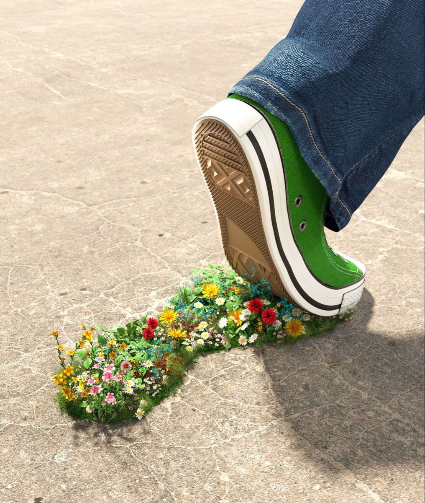
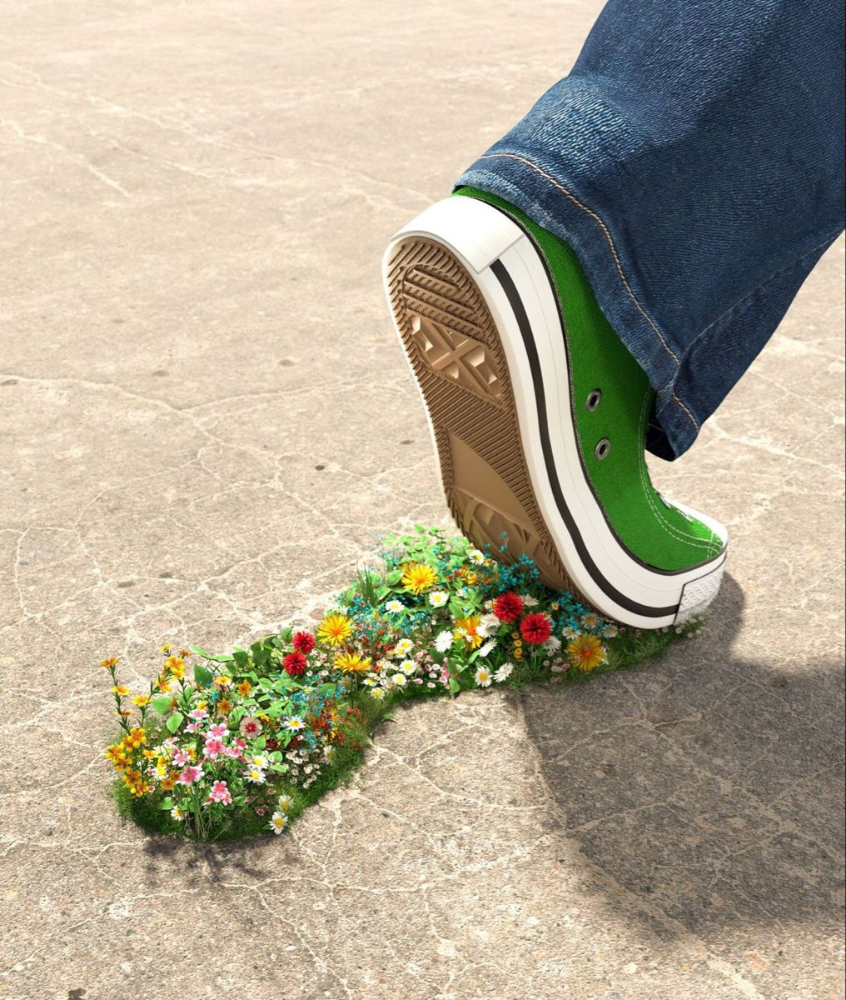

Genbrug

Få idéer til, hvordan du kan give dine ting nyt liv i hverdagen.
Læs mere 

Få idéer til, hvordan du kan give dine ting nyt liv i hverdagen.
Læs mere
Lær hvorfor affaldssortering gør en forskel i hverdagen.
Læs mere
Små vaner i hverdagen, der mindsker dit klimaaftryk.
Læs mere